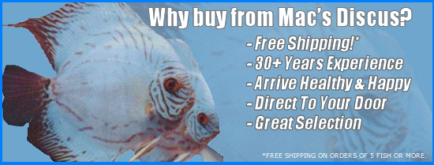

The OM Flora and Fauna organization is to help in the conservation of fauna and flora. Individuals interested in such conservation are encouraged to join the site and bring their ideas. The organiztion will soon be offering membership. Members will be meeting regularly to discuss ideas, organize presentations and visits to different sites.
Members will also prepare awreness campaigns and go and meet members of the public to propagate awareness about different types of endangered species the the importance of fauna and flora conservation
There will be need to list the different types of endangered species and collect data about such species and share the data with the public. There will also be the need for a long term action plan
